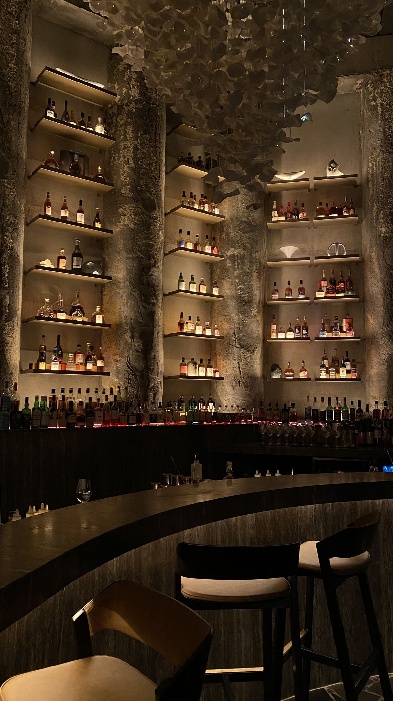
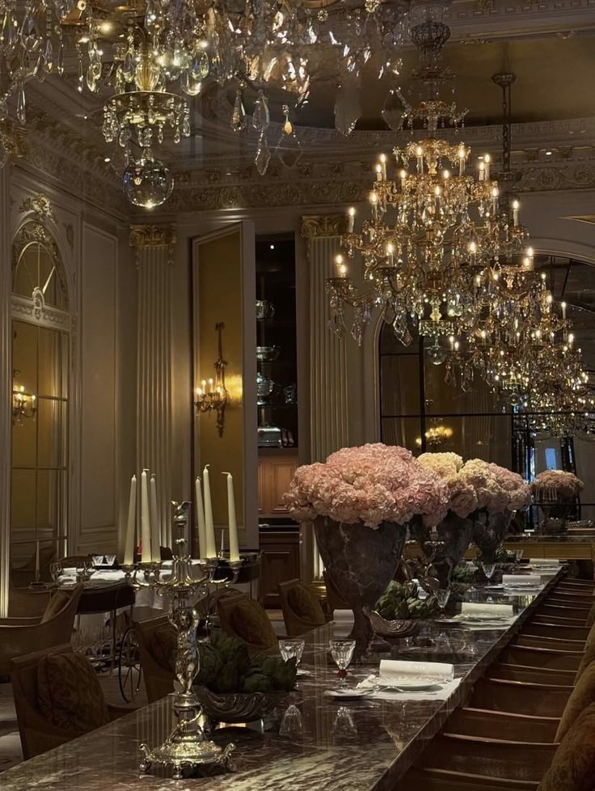
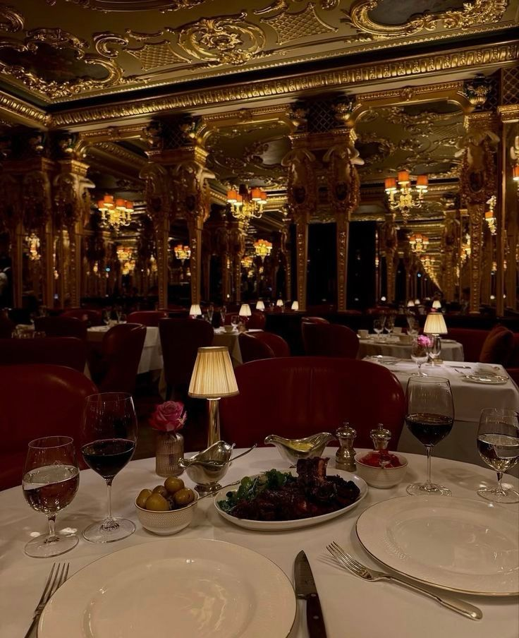
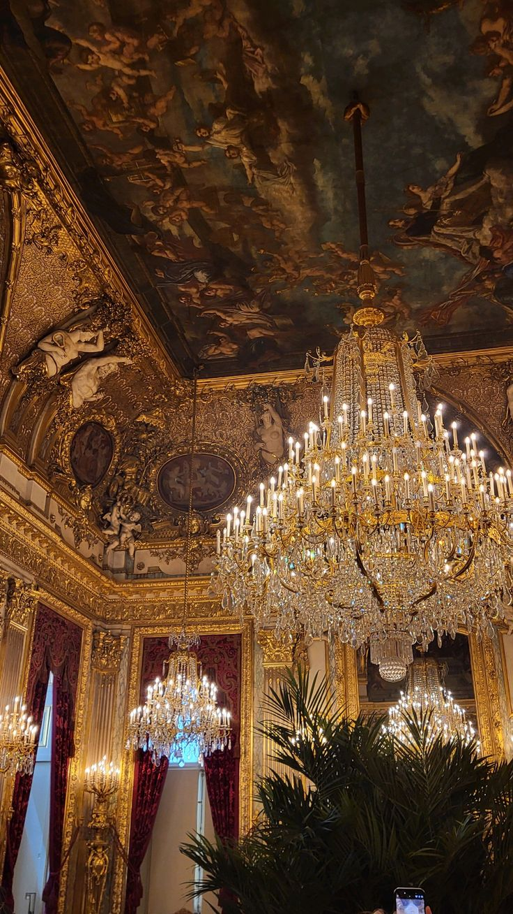
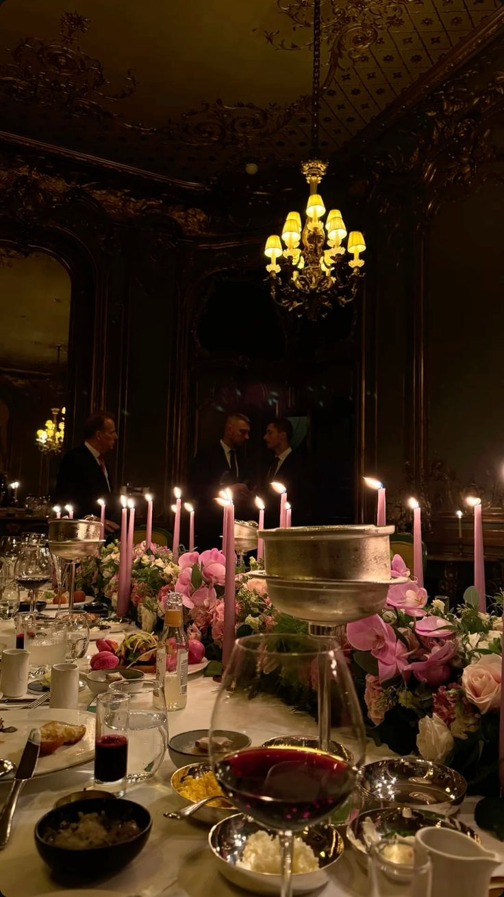
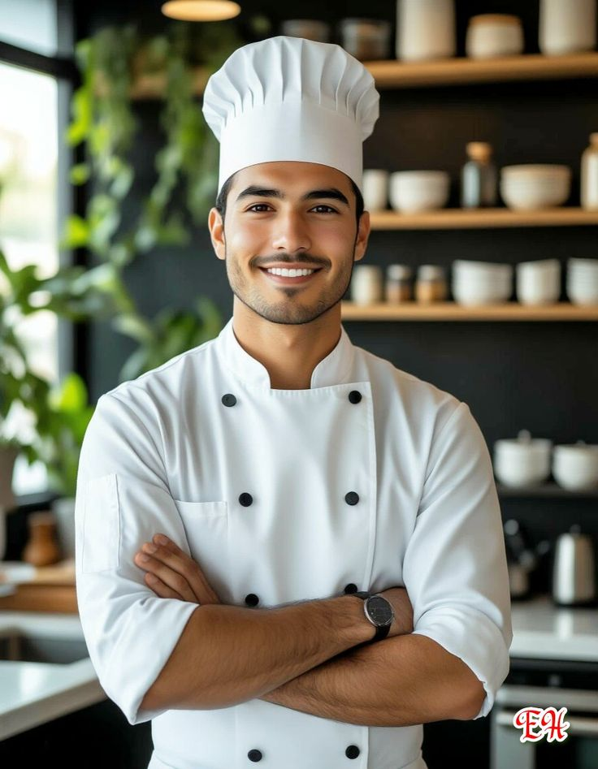

Интерьер ресторана
Luce delle Candele — свет свечей, где рождаются вкусы






Ресторан MariLi родился из тонкого желания соединить вкус, эстетику и эмоцию.
Здесь каждая деталь — от мерцания свечей до легчайшего оттенка соуса — хранит дух Италии, где искусство и гастрономия давно стали единым языком.
Мы бережно соединяем классику и современность, оставляя в каждом блюде пространство для чувства.
Атмосфера здесь тёплая и благородная, как золото вечернего солнца, а каждая встреча — как новая глава итальянской истории вкуса.
MariLi — пространство для тех, кто умеет чувствовать вкус жизни.
Luce delle Candele — свет свечей, где рождаются вкусы





Люди, которые создают вкус MariLi

Шеф-кондитер, чьи десерты прославились по всей Тоскане. Его тирамису — воплощение традиций.
Мастер пасты и соусов. Giulia создаёт вкус, в котором сочетаются простота и изысканность Италии.

Поклонник старинных рецептов и ароматов Тосканы. Его блюда — как тёплые воспоминания.
«Ogni piatto racconta una storia, e ogni storia ha il suo sapore.»
Каждое блюдо рассказывает историю, и у каждой истории — свой вкус.